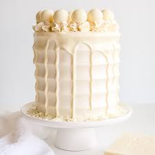

White Chocolate Cake

Description
White chocolate is incorporated into the cake layers, the frosting, and
the drip for a stunning monochrome effect.
White chocolate is made from cocoa butter, sugar, and milk solids.
It doesn’t contain any cocoa solids, which are found in milk and
dark chocolate varieties.
Cocoa butter is separated from the cocoa solids (cocoa nibs), which
are used to make milk & dark chocolate. The remaining cocoa butter
doesn’t have a ton of flavor on its own, so sugar and milk solids
are added to transform it into white chocolate.
Ingredients
White Chocolate Cake
- 140g white chocolate chopped
- 1 1/2 cups milk
- 2 1/2 cups all-purpose flour
- 2 1/2 tsp baking powder
- 1/2 tsp salt
- 3/4 cup unsalted butter room temperature
- 1 1/4 cups granulated sugar
- 3 large eggs room temperature
- 1 tsp vanilla
White Chocolate Swiss Meringue Buttercream
- 6 large egg whites
- 2 cups granulated sugar
- 2 cups unsalted butter room temperature
- 170g white chocolate chopped, melted, cooled
White Chocolate Ganache
- 105g white chocolate finely chopped
- 42g heavy cream
- 5 drops bright white color gel
Assembly
- 12 white chocolate Lindt truffles
- White chocolate shavings
Steps
White Chocolate Cake
White Chocolate Swiss Meringue Buttercream
White Chocolate Ganache
Assembly